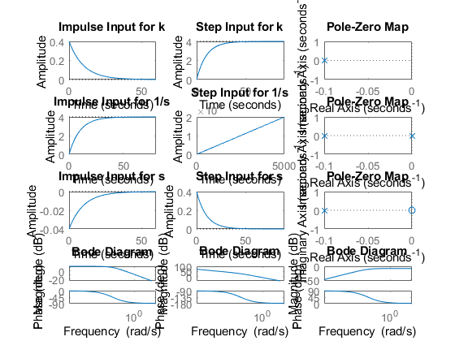

First Order Equation OL
Author: Mohammed Ijaz PS Number: 99003728 Date: 7th April 2021. Version: Matlab 2020b.
Contents
Plant Description
The Mass-damper first order system is taken as Plant. Equation: f= Bv + M v' f = force; B= coefficient of friction; M = mass ; v= velocity. Values: B1= 0.4 M1=1000; B2= 0.5 M2= 500; B3= 1.7 M3= 340;
Math Analysis
Independent: Time(t) Dependent: Velocity(v) and Force(f) Constant: Mass(M) and Frictional Coefficient(B)
% Roots:(-B)/M % Poles and Zero Calculation: % IVT: % 1. For step input: 0 % 2. For impulse input: 1/M % FVT: % 1. For step input: 1/B % 2. For impulse input: 0 % Time Response Results: % Rise Time :4tau = (4M)/B; where tau = M/B
Tool Analysis:
clc; B1= 0.5; M1= 5; P = 2; sys = tf([P/M1],[1,B1/M1]) subplot(4,3,1); impulse(sys); title('Impulse Input for k'); subplot(4,3,2); step(sys); title('Step Input for k'); subplot(4,3,3); [z,p,k]= tf2zp([P/M1],[1,B1/M1]) pzmap(sys) subplot(4,3,10); bode(sys) hold on; S = stepinfo(sys) sys = tf([P/M1],[1,B1/M1,0]) subplot(4,3,4); impulse(sys); title('Impulse Input for 1/s'); subplot(4,3,5); step(sys); title('Step Input for 1/s'); subplot(4,3,6); [z,p,k]= tf2zp([P/M1],[1,B1/M1,0]) pzmap(sys) subplot(4,3,11); bode(sys) hold on; S = stepinfo(sys) sys = tf([P/M1,0],[1,B1/M1]) subplot(4,3,7); impulse(sys); title('Impulse Input for s'); subplot(4,3,8); step(sys); title('Step Input for s'); subplot(4,3,9); [z,p,k]= tf2zp([P/M1,0],[1,B1/M1]) pzmap(sys) subplot(4,3,12); bode(sys) hold on; S = stepinfo(sys)
sys =
0.4
-------
s + 0.1
Continuous-time transfer function.
z =
0×1 empty double column vector
p =
-0.1000
k =
0.4000
S =
struct with fields:
RiseTime: 21.9701
SettlingTime: 39.1207
SettlingMin: 3.6180
SettlingMax: 3.9999
Overshoot: 0
Undershoot: 0
Peak: 3.9999
PeakTime: 105.4584
sys =
0.4
-----------
s^2 + 0.1 s
Continuous-time transfer function.
z =
0×1 empty double column vector
p =
0
-0.1000
k =
0.4000
S =
struct with fields:
RiseTime: NaN
SettlingTime: NaN
SettlingMin: NaN
SettlingMax: NaN
Overshoot: NaN
Undershoot: NaN
Peak: Inf
PeakTime: Inf
sys =
0.4 s
-------
s + 0.1
Continuous-time transfer function.
z =
0
p =
-0.1000
k =
0.4000
S =
struct with fields:
RiseTime: 21.9701
SettlingTime: 39.1207
SettlingMin: 1.0521e-05
SettlingMax: 0.0382
Overshoot: 0
Undershoot: 7.2058e+17
Peak: 0.4000
PeakTime: 0
 Comparison Analysis:
Propotional controller will have no effect on Rising time and setting time of the system hence there response parameters remains same for all values of p and only the amplitude of the system get affected by P times.
%Integrator controller is used to eliminate steady state error from the %system , but as a pole is added system is going from stable to marginally %stable. %Differentiator controll on system adds a zero to the system and makes %unstable system stable in our case %Stability: Both System 1 and System 3 are stable as roots are negetive and have same system responses. %Accuracy: Settling time of System 1 and System 3 is lowest so they are Accurate. %Speed: Rise time of System 1 and System 3 is lowest so they are high speed Systems.